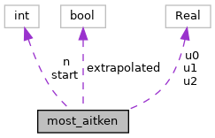
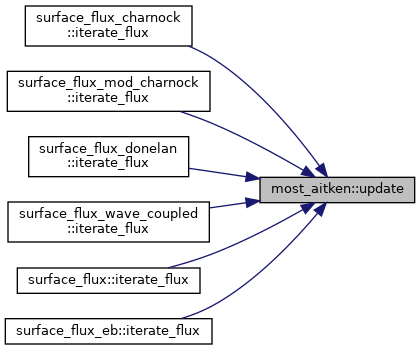

- Generated by
 1.9.1
1.9.1
|
ERF
Energy Research and Forecasting: An Atmospheric Modeling Code
|
#include <ERF_MOSTUtils.H>

Public Member Functions | |
| AMREX_GPU_HOST_DEVICE AMREX_FORCE_INLINE amrex::Real | update (amrex::Real u_new, int iter) |
Public Attributes | |
| int | start {25} |
| bool | extrapolated {false} |
| whether the last update returned an extrapolated value More... | |
| int | n {0} |
| amrex::Real | u0 {zero} |
| amrex::Real | u1 {zero} |
| amrex::Real | u2 {zero} |
Aitken delta-squared acceleration of the relaxed u* iteration in the prescribed-flux kernels.
Near the stable fold the slope of the fixed-point map approaches 1 and the plain iteration needs hundreds of passes. From pass start on, every third iterate is replaced by the Aitken extrapolation of the last three (kept only within a factor of 2 of them), so points that converge before start are unchanged. The map is not stationary when w* or a u*-dependent z0 also changes from pass to pass, so the kernels do not stop on an extrapolated pass: the plain pass after it, with zeta and psi from the same u*, decides convergence.
|
inline |
Return the iterate to continue from.
| [in] | u_new | iterate after pass iter |
| [in] | iter | number of passes done |
Referenced by surface_flux_charnock::iterate_flux(), surface_flux_mod_charnock::iterate_flux(), surface_flux_donelan::iterate_flux(), surface_flux_wave_coupled::iterate_flux(), surface_flux::iterate_flux(), and surface_flux_eb::iterate_flux().

| bool most_aitken::extrapolated {false} |
whether the last update returned an extrapolated value
Referenced by surface_flux_charnock::iterate_flux(), surface_flux_mod_charnock::iterate_flux(), surface_flux_donelan::iterate_flux(), surface_flux_wave_coupled::iterate_flux(), surface_flux::iterate_flux(), surface_flux_eb::iterate_flux(), and update().
| int most_aitken::n {0} |
Referenced by update().
| int most_aitken::start {25} |
Referenced by update().
| amrex::Real most_aitken::u0 {zero} |
Referenced by update().
| amrex::Real most_aitken::u1 {zero} |
Referenced by update().
| amrex::Real most_aitken::u2 {zero} |
Referenced by update().